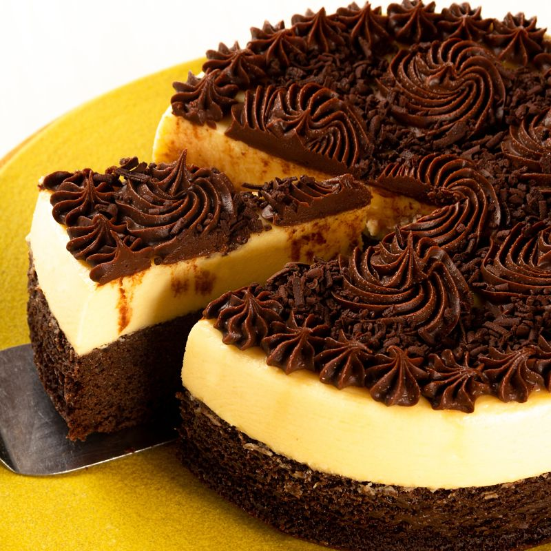

Si te pidieran que relaciones tu niñez con base a un aroma, lo más probable es que recuerdes los postres de tu mamá o de tu abuela, esos que te hacen feliz.
Por eso en Repostería hecha en casa, queremos que sigas recordando esa niñez con nuestros deliciosos postres, sin remordimientos porque al mismo tiempo cuidamos de tu salud, elaboramos productos saludables, nutritivos y de calidad, porque pensamos en ti.

La hora del postre suele ser el momento en el que nos relajamos y compartimos con nuestros seres queridos las anécdotas y los cuentos del día a día.
Por eso cada cumpleaños, cada celebración debe terminar con un postre especial que te lleve a disfrutar de un momento muy agradable y exquisito para el paladar.